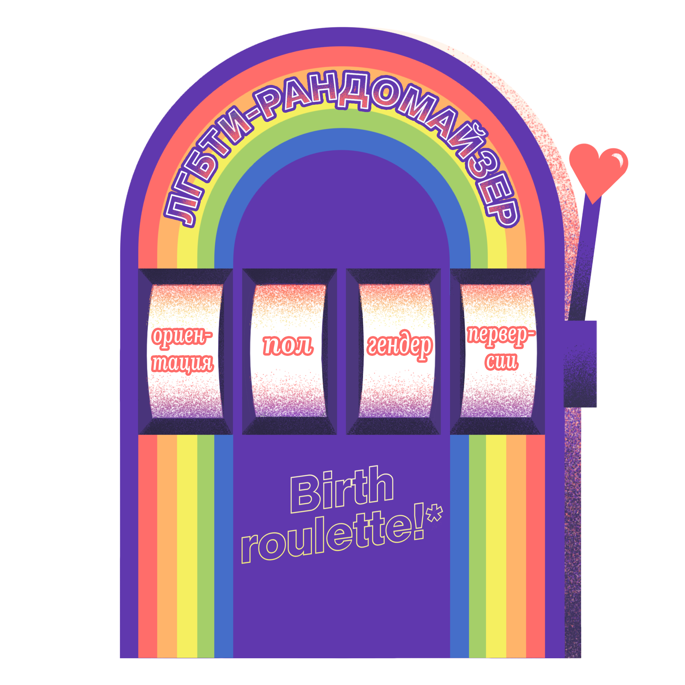
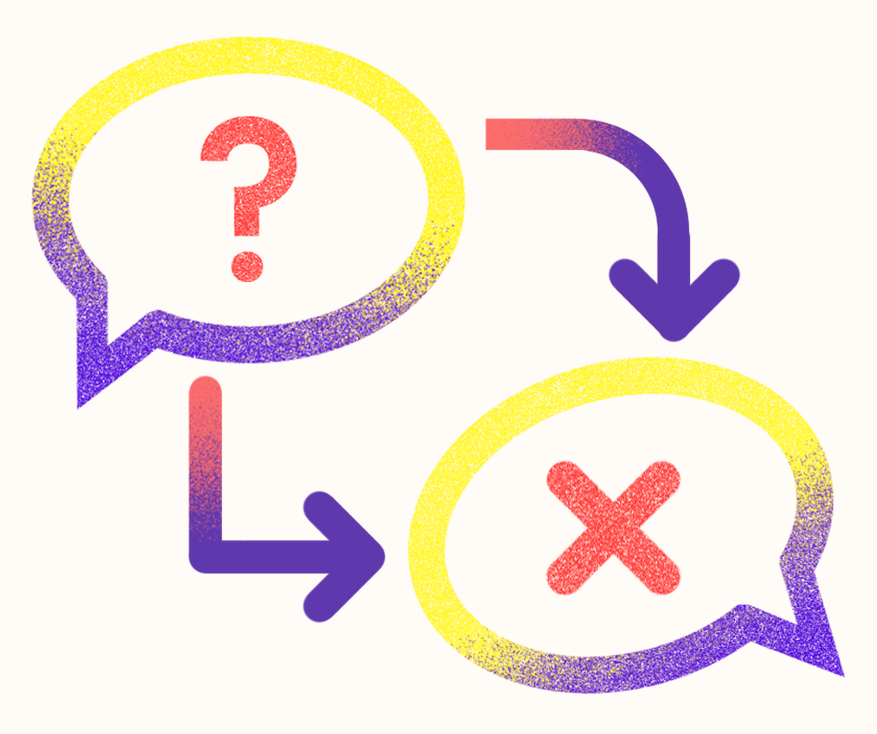
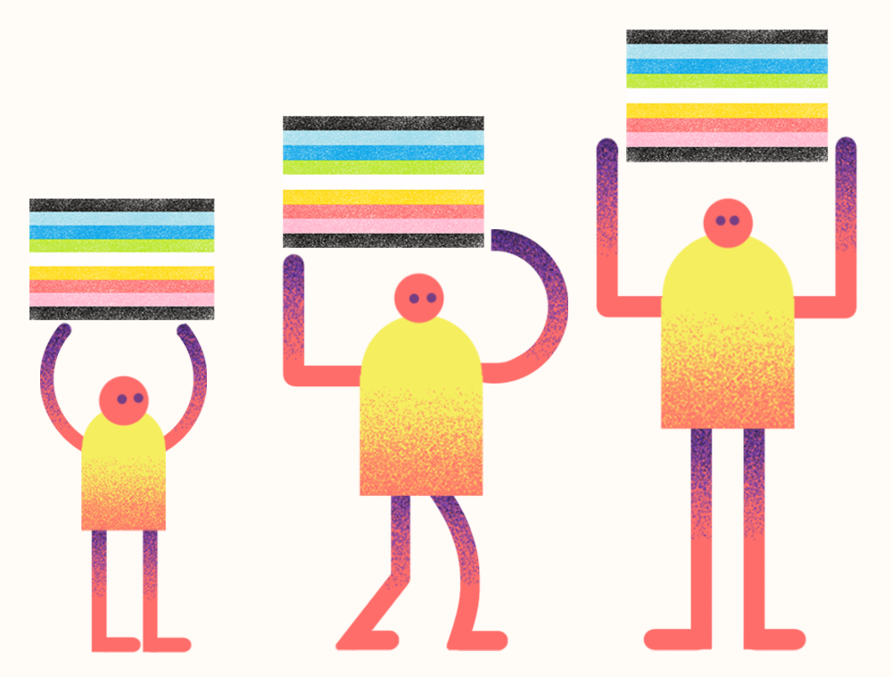
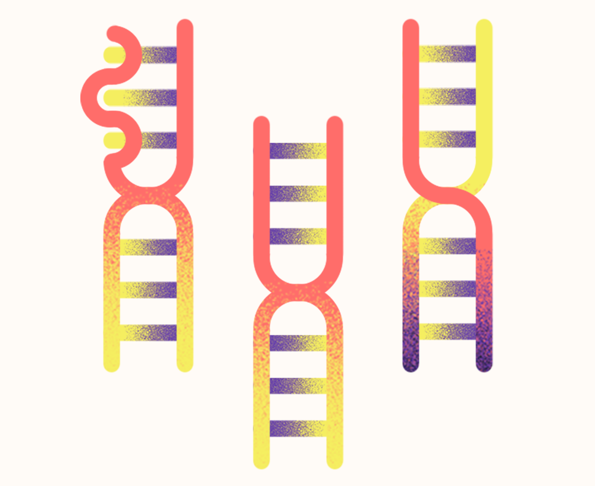

Общие определения.
Представьте себе игровой автомат, в котором случайным образом выпадает набор символов. В игровом автомате есть выигрышная комбинация, и чем более значим символ, тем больше выигрыш. Заменим вишни, лимончики и семерки на следующий набор терминов и значений, которые выпадут в каждом слоте: сексуальная ориентация, пол, гендер. Каждый барабан в отдельном окошке будет ответственен за отдельное понятие. При желании в нашу слот машину можно добавить еще ячейки - пусть это будут перверсии. Поговорим о pкаждой ячейке.
Сексуальная ориентация - первый слот. Альфред Кинси в 1948 году публикует книгу «Половое поведение самца человека». В его работе предложена шкала для определения сексуальной ориентации. Такая шкала известна нам как «шкала Кинси». Здесь ещё можно отдельно говорить о сексуальном поведении, идентичности, возбуждении, влечении, привлекательности и отношениях. Помимо сексуальной ориентации можно выделить и романтическую сексуальность. В основе такого разделения лежит не только определение идентичности. Следует отличать идентичность от влечения, желаний, поведения и практик.
Понятие пола, а именно биологического пола, в современном мире не ограничено двумя категориями. Мужской или женский пол не дает точного представления о замысле природы. Часть государств, приняв во внимание исследования последних лет, вводят дополнительные категории для определения пола в официальных документах граждан. Профессор биологии и гендерных исследований Анна Фаусто-Стерлиг в статье «5 Полов» предлагает определять пол по следующим составляющим:
- Хромосомы. Здесь известные нам из самого простого курса биологии наборы XX, XY. Оказывается, природа гораздо интереснее и если она вас одарила набором, например, XXY - то вам повезло.
- Гормоны. Тестестерон и эстроген - не такие уж и противоборствующие гормоны, они в разном количестве присутствуют в любом организме. Тестостерон - преимущественно мужской гормон, эстроген - женский.
- Гениталии. Внимательно посмотрите вниз. Что вы видите? Пенис или вагину?
- Железы: яички или яичники.
- Репродуктивные функции.
- Факторы, связанные с внутренними органами (яички, яичники).
На основании такого набора пунктов можно выделить следующий набор полов:
1) носители женских гениталий — женщины,
2) носители мужских гениталий — мужчины,
3) носители смешанных гениталий (семенники и яичники) — гермафродиты (гермы),
4) носители преимущественно женских, но с мужскими элементами, гениталий — фемининные псевдогермафродиты (фермы),
5) носители преимущественно мужских, но с женскими элементами, гениталий — маскулинные псевдогермафродиты (мермы).
Гендер, который определяют как социальный пол ‑ достаточно интересный термин. В современном Facebook есть десятки вариантов определения своего гендера. Нужно ли их все знать? Наверное ‑ не стоит. Главное помнить, что за каждым человеком остается право на самостоятельное гендерное самоопределение. Самое важное здесь ‑ противостояние гендерной дискриминации, которая приводит к тяжким последствиям как для человека в плане его самореализации, так и для общества, выражаемое по большей части в потере эффективности социально-экономического развития.
Четвертый слот - перверсии, то есть особенности сексуального поведения, считающиеся необычными среди большинства людей. К перверсиям относятся, например, фетиши.
До и после ЛГБТ. Как меняются определения.
L
Lesbian - Лесбиянки ‑ женщины, которых привлекают женщины. Медицинский термин ЖСЖ (женщины, которые имеют секс с женщинами).
G
Gay - Геи - мужчины, которых привлекают мужчины. Медицинский термин ‑ МСМ (мужчины, которые имеют секс с мужчинами).
B
Bisexual - Бисексуалы - люди, которых притягивают люди обоих полов.
T
Transgender - Трансгендеры - люди, внутренне ощущение гендера которых отличается от культурных гендерных стереотипов. Термин, включающий в себя и транссексуальность, и травести (кроссдресс), гендерквирность.
T
Transsexual - Транссексуалы - мужчины или женщины, чей пол от рождения не совпадает с гендером. Медицинские определения ‑ MTF или FTM (до сих пор медицинский диагноз ‑ "гендерная дисфория").
T
Transvestite - Трансвестит - человек, который переодевается в одежду другого пола.
I
Intersex - Интерсекс - люди, которые при рождении не имеют четкого определения пола (гениталии, хромосомы).
Q
Queer - Квир - люди, которые не хотят маркировать свою сексуальную ориентацию.
P
Pansexual - Пансексуалы - люди, отрицающие гендерную бинарность, выбирающие человека в зависимости от их индивидуальности, а не гендера и сексуальной ориентации.
A
Asexual - Асексуалы - люди, не интересующиеся сексом.
A
Allies - Союзники - натуралы, высказывающие дружелюбные позиции к сообществу.
Гены, гормоны, мозг: ученые в поисках причин гомосексуальности.
В основе любых исследований сексуальности лежат три подхода: эссенциалистский, конструктивистский и квир-подход. Мы по-разному подходим к взгляду на природу человека и человеческой сексуальности. При этом, три подхода можно рассматривать как дополняющие друг друга в разные периоды времени, которые берет на вооружение политическая повестка. На мой взгляд, несмотря на то, что теории иногда противоречат друг другу (так как по-разному оценивают природу человека, на которых строится последующая аргументация), они позволяют правильно выстраивать аргументацию в изменении общественного мнения и необходимо придерживаться каждого подхода последовательно в исторической перспективе. Каждый подход позволяет развеивать стереотипы для каждой конкретной группы.
Рассмотрим конкретный пример изменения общественного мнения к гомосексуальности в России. На протяжении последних 20 лет Левада-центр проводит опрос об отношении граждан к гомосексуальности. Так ответы на вопрос о природе человеческой сексуальности практически не поменялись за два десятилетия. Отвечая на вопрос «что такое гомосексуальность» наши сограждане выбирают из трех вариантов ответа: «это болезнь», «это девиация (результат воспитания)», «это сексуальная ориентация». Еще есть вариант «затрудняюсь ответить». Такой тест, похожий на ЕГЭ, на самом деле имеет один правильный вариант ответа, но откуда же всем его знать. Почему тогда большинство ответов не «затрудняюсь ответить»?
Если мы исходим из восприятия гомосексуальности как болезни, то аргументация про врожденность гомосексуальности может не сработать. Мы можем долго рассказывать про гормоны и мозг, но наш оппонент просто заявит, что это такая врожденная болезнь. Если мы исходим из восприятия гомосексуальности как девиации, то задача показать невозможность воспитать гея и лесбиянку, чему эссенциалистский подход может способствовать.
Эссенциалистский подход рассматривает сексуальность в качестве фундаментальной, культурно индифферентной характеристики, не зависящего от социального влияния биологически данного влечения, направляемого импульсами или инстинктами. Сексуальность в этом случае объясняется через соотнесение с некой внутренней сущностью человека, природной основой или универсальной моделью поведения и анализируется через набор бинарных оппозиций вроде естественное/неестественное, скрытое/видимое, базис/надстройка, истинное/ложное, реальность/интерпретация, сущность/проявление и другие.
В отличие от эссенциалистского, конструктивистский подход рассматривает проявления сексуальности созданным культурой и обществом конструктом. Первая формулировка конструктивизма в сексологии была предложена американскими социологами Джоном Гэньоном и Уильямом Саймоном, создавшими теорию сексуального сценария. В этой теории сексуальность опирается на определенные биологические предпосылки, однако определена исторически и культурно. Гэньон и Саймон считают, что эротические предпочтения вытекают из специфических стимулов и значений, предлагаемых культурой. Большинство людей в нашей культуре считают сексуальный контакт с лицом своего пола качественно отличным от контакта с лицом другого пола, категоризируют такое поведение и его носителей как нечто особенное.
В современной науке основная масса исследователей не учитывает категоричным образом влияние биологических и социально-культурных факторов на формирование различных проявлений сексуальности. Принято, что каждый из этих факторов оказывает своё влияние на развитие сексуальной ориентации. Американский сексолог Гэри Ф. Келли в учебном издании «Основы современной сексологии» констатирует на 2000 год, что теоретики отдают предпочтение многофакторной модели, в которой учитываются все факторы, способные оказать влияние на формирование сексуальной ориентации: биологические, психологические и социальные. Считается вполне вероятным, что в каждом конкретном случае существует своеобразная комбинация факторов, влияющих на формирование сексуальной ориентации.
Геями рождаются или становятся?
С 1990 года гомосексуальность уже не считается психосексуальным расстройством, что подтверждается исключением термина из международной классификации болезней 10-го издания (МКБ-10) Всемирной организации здравоохранения. Депатологизация гомосексуальности в России произошла в 1997 году. Вот что пишет об этом Игорь Кон (Кон И.С. «Клубничка на березке. Сексуальная культура в России»):
«Почему страшное "половое извращение" вдруг стало вариантом нормы, никому, даже врачам, толком не объяснили. Некоторые необразованные и раздосадованные потерей власти и денег психиатры и сексопатологи приняли демедикализацию гомосексуальности в штыки и вместо того, чтобы разъяснять широкой публике суть дела, продолжают выступать с гомофобными заявлениями, которые в медицинской среде надлежащего отпора не встречают».
В 1960-80хх годах считали, что ребёнок рожден подобно чистой странице. Но позже стало понятно ‑ гендерная идентичность определяется уже в матке. Здесь показателен случай "Джон-Джоан-Джон". Родился мальчик Джон. Мальчику повредили пенис в ходе хирургического вмешательства. Его решили превратить в девочку. Так появилась Джоан (удалили яички, добавили эстроген). Джоан не приняла свою новую гендерную идентичность и снова появился Джон. Джон женился, усыновил троих детей, но однажды проиграл свои деньги на бирже, развелся с женой и покончил жизнь самоубийством. Итак, удаление пениса или яичек, прием эстрогена не меняют гендерную идентичность. Это все закладывается при рождении. А значит, если человек чувствует, что его идентичность не соответствует имеющимся органам, то он может (и хочет) исправить ошибку природы и получить то состояние, которое было заложено уже в утробе матери.
Сексуальная идентичность тоже определяется генетически на 50% (данные по книге Д. Свааба "Мы это наш мозг"), что показали исследования близнецов. В ходе эволюции этот генетический фактор продолжает сохраняться. Потому что этот ген (до сих пор его локализацию не знают) увеличивает вероятность не только гомосексуальности, но и продуктивность других членов семьи. То есть братья и сестры гомосексуала скорее всего будут иметь больше детей.
В 1993 году Дин Хамер на выборке из 114-семей установил, что у геев вероятность найти дядю-гея по материнской линии составляет 7,3% (по отцовской ‑ 1,7%). И вот этот "ген гомосексуальности" стоит поискать в X-хромосоме, которая передается от матери. Так обнаружили участок Xq28. И здесь корреляция с сексуальной ориентацией существует (эти данные перепроверены на дальнейших исследованиях, последнее от 2012 года). Где он конкретно ‑ не понятно (возможно участок MAGE-11). Почему искать локализацию ‑ неэтично и опасно? Помните историю, что в семье гея большая вероятность увеличения потомства со стороны братьев и сестер (даже есть статистика: 2,67 vs 2,3 ребенка на женщину)? Изменение гена одного гея повлияет и на них. Что будет с их репродуктивностью? Так что геи не приводят к вырождению нации, а отсутствие геев ‑ приводит.
Толерантность и гомофобия.
Понятие гомофобии вводит психолог Г. Вайнберг в 60х. Он говорит, что это страх гетеросексуала оказаться в тесном контакте с гомосексуалом или презрение гомосексуала к себе.
Гетеросексизм ‑ это идеологическая система, которая подобно сексизму, антисемитизму и расизму, принижает и стигматизирует любые негетросексуальные формы поведения, идентичности, отношений, сообществ. Если, например, черный мужчина может быть стигматизирован за видимый цвет кожи, то гомосексуальность определить сложнее, она не так видима. То есть, только видимая гомосексуальность подвергается нападению.
Сексуальные предубеждения (предрассудки) ‑ негативное восприятие чужой сексуальности, основанное на стереотипах, которое предполагает оценку или суждение, направлено на социальную группу и ее членов и выражается с враждебностью или неприязнью.
Самое цитируемое исследование гомофобии ‑ исследование Адамса 1996 года. Команда исследователей набирает 64 белых парня в возрасте от 18 до 31 года (20.3 ‑ средний возраст) и тестирует на гомофобию через отношение респондентов к утверждениям вроде
"Я буду нервничать, находясь в группе гомосексуалистов". Адамс делит группу на две части - гомофобную (35 человек) и негомофобную (29 человек), после чего им показывают порно ‑ гетеросексуальное, гомосексуальное мужское и женское. Исследователи уточняют, что в кадре все происходит по согласию. После этого на пенис испытуемого надевают специальный прибор, который измеряет возбуждение. Результат показал, что при просмотре гей-порно негомофобы в основном не возбудились, а гомофобы ‑ в основном возбудились.
Другое исследование гомофобии в 2011 году провела Аманда Махаффей. Она показывала картинки гетеросексуальных и гомосексуальных пар. Для чистоты эксперимента добавляют картинки магазина электроники и щенков. Махаффей выбрала 104 студентов (средний возраст 19), из них 83% белых. Сначала спросили, будут ли респонденты хорошо себя чувствовать, находясь в одной обстановке с геем. Задали 8 таких вопросов и поделили на 3 группы по уровню предубеждений (низкий, средний, высокий). Средний и высокий ‑ гомофобы. Далее респондентам показали картинки и расспросили о чувствах и ощущениях. Результаты эксперимента показали, что люди со средним и высоким уровнями предубеждений (гомофобы) меньше моргают на фотографиях геев. Если бы им не нравилось - они моргали бы чаще. Можно сделать вывод, что они таким образом не гомофобы, а латентные геи, но давайте не будем спешить.